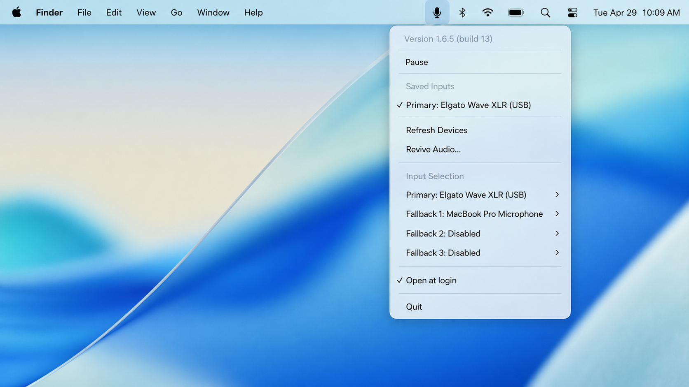

🎧 Stop headset mode
Keep Bluetooth headphones output-only by locking input to a better Mac, USB, webcam, or XLR microphone.
MicLock keeps macOS on your preferred microphone, stopping AirPods, AirPods Pro, Sony WH-1000XM4, WH-1000XM5, WH-1000XM6, and other Bluetooth headsets from taking over input and ruining output quality.
brew tap WantbeFree/tapbrew install --cask miclock

Keep Bluetooth headphones output-only by locking input to a better Mac, USB, webcam, or XLR microphone.
Save one primary input plus three fallback microphones. MicLock resolves the best available device automatically.
Refresh CoreAudio devices and revive audio without quitting the app when docks or USB microphones disappear after sleep.
MicLock is device-agnostic and works with CoreAudio input devices on Apple Silicon Macs.
No. It avoids the low-quality Bluetooth path by keeping another microphone selected.
No. MicLock does not record audio, call network APIs, or collect analytics.
macOS and meeting apps can still change default input. MicLock watches CoreAudio changes and reapplies your preferred input order.